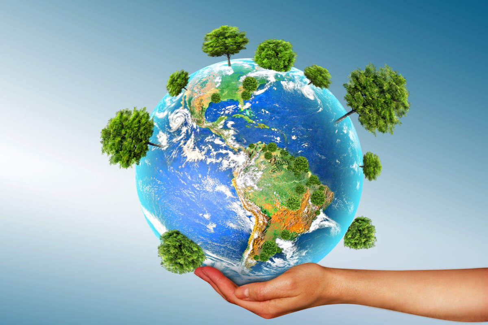
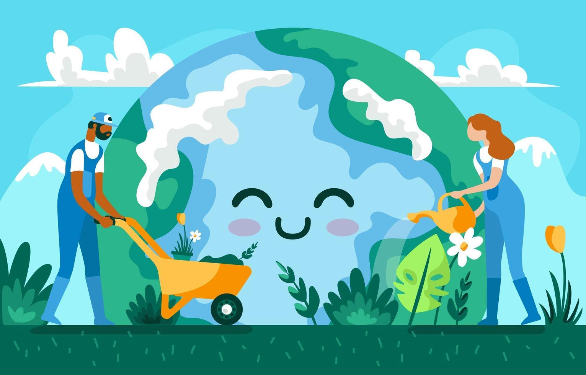
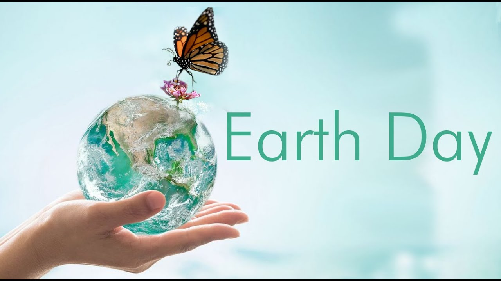
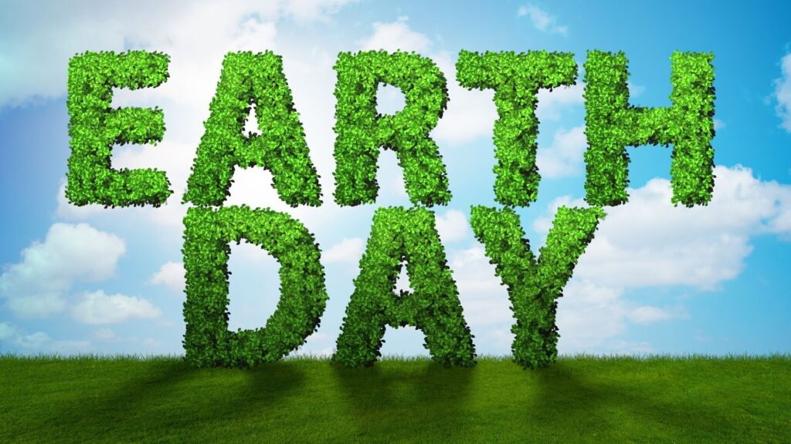

La Giornata della Terra, celebrata ogni anno il 22 aprile, rappresenta uno dei momenti più significativi a livello globale per la tutela dell’ambiente e la sensibilizzazione sulle minacce che gravano sul nostro pianeta.
Nata nel 1970 negli Stati Uniti come risposta a un crescente bisogno di protezione legale degli ecosistemi, questa ricorrenza si è evoluta fino a coinvolgere oggi oltre un miliardo di persone in più di 190 Paesi, trasformandosi da protesta locale a pilastro della diplomazia ambientale moderna.
L’obiettivo principale dell’evento non è soltanto promuovere la consapevolezza su temi urgenti quali il cambiamento climatico, l’inquinamento e la perdita di biodiversità, ma stimolare un profondo cambio di paradigma culturale. In un’epoca in cui gli effetti dell’attività umana sono divenuti sistemici, la Giornata della Terra invita a riconoscere l'intrinseca interdipendenza tra la salute degli ecosistemi e il benessere sociale ed economico dell'umanità. Proteggere l'ambiente significa, in ultima analisi, preservare le condizioni necessarie alla vita stessa, superando la visione della natura come mera risorsa da sfruttare in favore di una concezione di custodia responsabile.
Questa ricorrenza pone inoltre l’accento sulla giustizia intergenerazionale, richiamando il dovere etico della generazione presente di gestire il capitale naturale in modo da non compromettere le possibilità delle generazioni future. Tuttavia, affinché tale celebrazione non resti un esercizio simbolico confinato a una singola data, è necessario che si traduca in un impegno quotidiano e strutturale.
Il vero successo di questo movimento risiede nella capacità di integrare la sostenibilità in ogni processo decisionale, trasformando l'attivismo straordinario in una pratica ordinaria di cittadinanza consapevole. Il cambiamento richiesto, dunque, non è solo tecnologico o normativo, ma risiede in una costante e collettiva responsabilità verso l'unico ecosistema che ospita la nostra civiltà.



